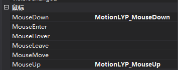
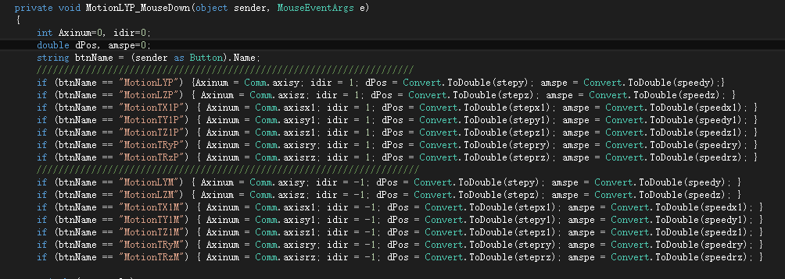

首先在Winform中添加一个Button控件，在属性里面为控件添加鼠标按下和弹起事件（不要双击按钮，在属性里面添加）

再添加其他几个按钮控件，在控件的属性里面为鼠标按下和弹起添加已定义好处理函数（MotionLYP_MouseDown,MotionLYP_MouseUp），所有按钮添加同样的处理函数。如上图所示。
然后在函数里面添加处理代码。（需要判断按下的是哪一个按钮）（sender as Button）.Name获取按钮的name：

如图所示，btnName变量存储按下按钮的name。